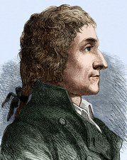

Joseph Louis Proust · 1799
Definisi
Hukum Perbandingan Tetap (Law of Definite Proportions) menyatakan bahwa suatu senyawa kimia selalu mengandung unsur-unsur penyusunnya dalam perbandingan massa yang tetap dan tidak bergantung pada sumber atau cara pembuatannya.
Air selalu tersusun dari H dan O dengan perbandingan massa 1 : 8, di mana pun di dunia ia dibuat.
Penemu

ProustJoseph Louis Proust
26 Sep 1754 — 5 Jul 1826
Angers, Prancis
Joseph Louis Proust adalah seorang kimiawan Prancis yang menghabiskan sebagian besar kariernya di Spanyol sebagai direktur laboratorium kerajaan di Madrid. Ia dikenal atas keteguhannya dalam melakukan analisis kuantitatif yang sangat teliti.
Proust mendebat teori Berthollet selama hampir 8 tahun (1799–1807). Berthollet percaya bahwa komposisi senyawa bervariasi tergantung kondisi. Proust dengan sabar membuktikan melalui ratusan eksperimen bahwa Berthollet keliru.
Karya monumentalnya akhirnya diterima luas setelah John Dalton menggunakannya sebagai landasan Teori Atom (1803), yang mengonfirmasi bahwa senyawa terbentuk dari atom-atom dalam rasio bilangan bulat yang tetap.
Bukti Eksperimen
Tidak peduli dari mana air berasal — sungai, hujan, atau sintesis laboratorium — komposisinya selalu sama:
| Sumber Air | Massa H (gram) | Massa O (gram) | Rasio H:O |
|---|---|---|---|
| Air sungai (100g) | 11.2 | 88.8 | 1 : 7.93 |
| Air hujan (100g) | 11.2 | 88.8 | 1 : 7.93 |
| Sintesis lab (100g) | 11.1 | 88.9 | 1 : 8.01 |
| Air laut (100g) | 11.2 | 88.8 | ≈ 1 : 8 |
* Perbedaan kecil disebabkan ketidaktelitian pengukuran, bukan komposisi yang berbeda.
Contoh Senyawa Lain
H : O = 1 : 8
2 gram H selalu bergabung dengan 16 gram O
Na : Cl = 23 : 35.5
Rasio massa selalu 39.3% Na dan 60.7% Cl
C : O = 3 : 8
12 gram C selalu bergabung dengan 32 gram O
Fe : S = 7 : 4
56 gram Fe selalu bergabung dengan 32 gram S
"Senyawa adalah produk alam. Tidak ada yang lebih pasti daripada komposisinya yang tidak berubah."
— Joseph Louis Proust, 1799
Rangkuman